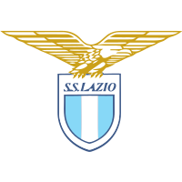
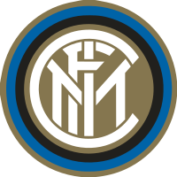
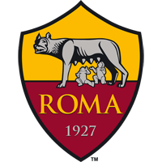
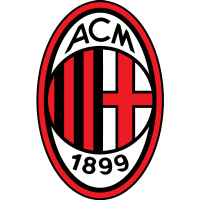
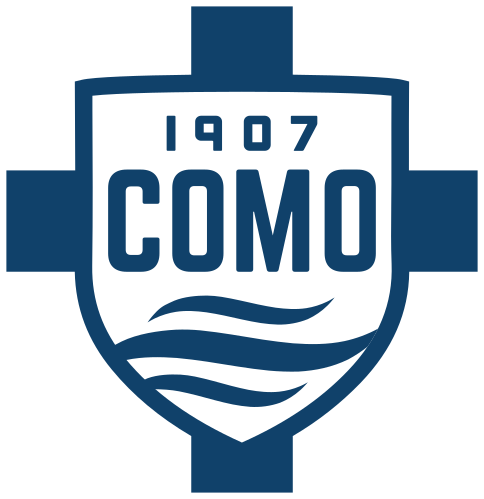
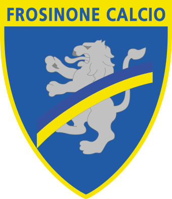
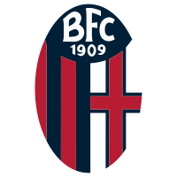
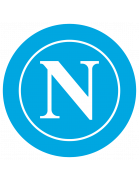
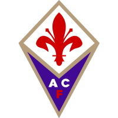
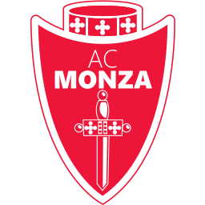

الدوري الإنجليزي
الدوري الإنجليزي الدوري الإسباني
الدوري الإسباني الدوري الألماني
الدوري الألماني الدوري الفرنسي
الدوري الفرنسي البطولة المغربية
البطولة المغربية الدوري الإيطالي — موسم 2026-27 • الجولة 11
الدوري الإيطالي — موسم 2026-27 • الجولة 11
✓ موثق المصدر: thestatsapi.com (18 نونبر 2026، 22:53 UTC) + مطابقة مع scanodds.com وpitchlabstats.com — الهدافون: renderfoot.com (18 نونبر 2026) + مطابقة مع pitchlabstats.com وmyfootballfacts.com — آخر تحقق: 18 نونبر 2026. الجدول الكامل موثق.
جدول الترتيب
الجولة 12 — 21–23 نونبر 2026| # | الفريق | لعب | فاز | تعادل | خسر | فرق | نقاط |
|---|---|---|---|---|---|---|---|
| 1 |  لاتسيو | 11 | 9 | 2 | 0 | +16 | 29 |
| 2 |  إنتر ميلان | 11 | 9 | 1 | 1 | +15 | 28 |
| 3 |  روما | 11 | 8 | 3 | 0 | +21 | 27 |
| 4 |  ميلان | 11 | 7 | 3 | 1 | +10 | 24 |
| 5 |  كومو | 11 | 7 | 2 | 2 | +8 | 23 |
| 6 |  فروزينوني | 11 | 6 | 2 | 3 | +9 | 20 |
| 7 |  يوفنتوس يوفنتوس | 11 | 5 | 3 | 3 | +3 | 18 |
| 8 |  بولونيا | 11 | 5 | 2 | 4 | +2 | 17 |
| 9 |  كالياري كالياري | 11 | 5 | 1 | 5 | -5 | 16 |
| 10 |  نابولي | 11 | 4 | 3 | 4 | +4 | 15 |
| 11 |  تورينو تورينو | 11 | 4 | 2 | 5 | -2 | 14 |
| 12 |  أتالانتا أتالانتا | 11 | 4 | 2 | 5 | -3 | 14 |
| 13 |  جنوى جنوى | 11 | 4 | 1 | 6 | -5 | 13 |
| 14 |  ليتشي ليتشي | 11 | 3 | 1 | 7 | -10 | 10 |
| 15 |  فيورنتينا | 11 | 2 | 3 | 6 | -8 | 9 |
| 16 |  بارما بارما | 11 | 2 | 2 | 7 | -8 | 8 |
| 17 |  ساسولو ساسولو | 11 | 2 | 2 | 7 | -13 | 8 |
| 18 |  مونزا | 11 | 2 | 1 | 8 | -8 | 7 |
| 19 |  فينيزيا فينيزيا | 11 | 2 | 0 | 9 | -13 | 6 |
| 20 |  أودينيزي أودينيزي | 11 | 1 | 2 | 8 | -13 | 5 |
هدّافو الدوري
1غوستافو فاريلامونزا9
2دونييل مالينروما8
3أنتونيو رايموندوفروزينوني8
4نيكولا كرستوفيتشأتالانتا7
أتالانتا75ماركوس تورامإنتر ميلان6
6أدريان رابيوميلان5
7أناستاسيوس دوفيكاسكومو5
8ألفادجو سيسيهميلان5
9جياكومو كالوفروزينوني5
10دانيال مالدينيكالياري5
كالياري5مباريات ونتائج
كل المباريات ←مساحة إعلانية — CPA (Placeholder)تُضاف هنا عروض موثوقة بعد اختيارها — بدون نوافذ منبثقة وبدون روابط مراهنات.لا يوجد أي عرض حي أو رابط خارجي في هذه المساحة حالياً.
أخبار الكالتشيو
كل الأخبار ←لا توجد أخبار منشورة عن هذا الدوري بعد في أرشيف الموقع.